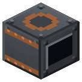
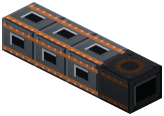
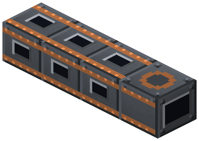
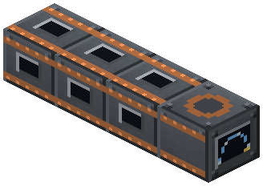

Калютрон

Электромагнитное разделение изотопов: природный диоксид урана -> малый уран-235 + 3 урана-238 (отвал).
Электромагнитное разделение изотопов: природный диоксид урана -> малый уран-235 + 3 урана-238 (отвал). EU IC2 до HV, 100 000 EU на диоксид. Секции трека в ряд ЗА калютроном (до 8): каждая - ещё один бак за партию и ещё 512 EU/т приёма.
Параметры
| Эпоха | 5 — Атом и космос |
|---|---|
| Многоблок | да: секции |
| Привод | топка / своё |
| что делает | диоксид урана -> малый U-235 + U-238; секции трека до 8 |
| энергия на входе | EU 100 000/партию, до HV, 512 EU/т на бак |
| из чего | плотная медь, медные катушки, продвинутый корпус и схемы IC2, HV-трансформатор |
Кто кормит
- Диоксид урана (природный) ← Реактор высокого давления
Кого кормит
- машины Zavod её продукт не едят
Как устроено (из кода)
Калютрон (Лоуренс, Ок-Ридж Y-12, 1943): электромагнитное разделение изотопов урана. Ионы урана летят по дуге в сильном магнитном поле, лёгкий уран-235 ложится ближе, тяжёлый 238 - дальше. Фтора в сборке нет - газовой диффузии через гексафторид не будет, обогащение только так. Ест электричество тоннами (EU IC2, до HV). Партия: 1 природный диоксид урана -> 1 малый уран-235 + DEPLETED урана-238 (отвал - в MOX и топливо), energyPerBatch EU. Многоблок («рейстрек» Y-12): секции трека в ряд ЗА калютроном (с противоположной лицу стороны), до MAX_SECTIONS. Каждая секция - ещё один бак: партия берёт до 1 + секций диоксида, EU на диоксид те же, но приём EU за тик растёт с числом баков (MAX_IN на бак). Пульт, трансформатор и схемы - одни на весь трек. Слоты: 0 диоксид урана, 1 уран-235 (выход), 2 уран-238 (выход).
Сборка
Пульт, трансформатор и схемы — одни на весь трек.

Калютрон лицом к себе (тут — на восток).

Секции трека в ряд ЗА калютроном, с противоположной лицу стороны (до 8, тут 3): каждая — ещё бак за партию и ещё приём EU.


Бледное — поставлено на прошлых шагах.